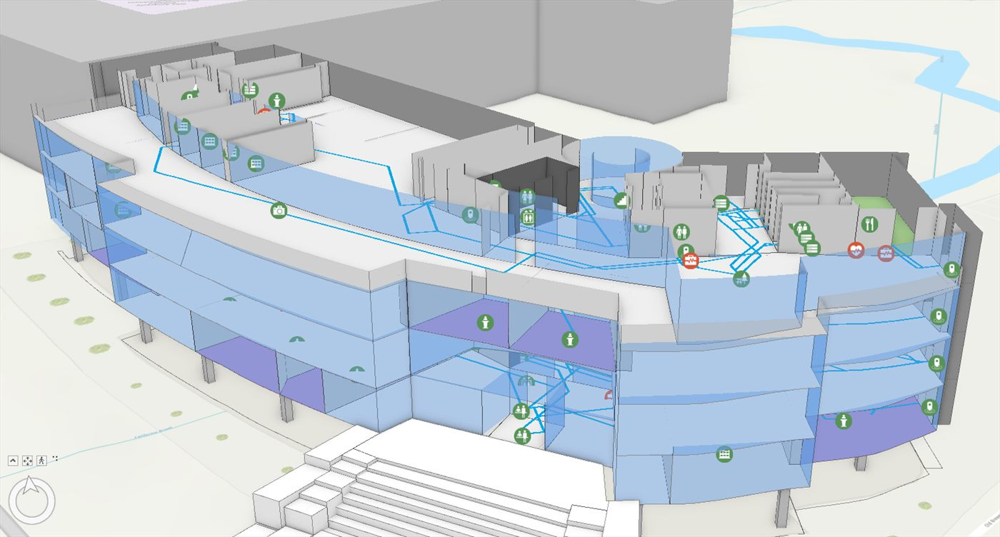

Service 02
Maps and records for buildings.
We bring floor plans, room lists and equipment records together in a searchable map, so teams can see what is where, how floors connect and what needs updating.

The problem
A 3D picture alone cannot help manage a building.
A 3D model is only useful for day-to-day work if it can show details such as which rooms are in use, which lift serves a floor and which routes avoid stairs.
We agree on the information your team needs, then build the map and records to match. A clear floor plan with useful details may be more helpful than a complex 3D model.
What is included: a building map, an equipment list, live sensor data and a simulation are different things. We state clearly which items are part of the agreed work.
Scope
What the twin can contain.
Multi-floor spatial model
Each public floor as a connected level, with vertical circulation modelled explicitly rather than left to a viewer.
Building layout digitisation
Units, rooms, corridors, entrances, service areas and facilities drawn from plans and verified on site.
Space inventory
Use, area, tenancy, occupancy status and access conditions attached to each space, queryable by the operator.
Asset register linkage
Equipment and facilities linked to the space they serve, using your existing identifiers where they exist.
Indoor spatial modelling
Walkable area, barriers, level connectors and accessible alternatives, ready for routing or analysis.
Facility information workflows
How a change is requested, approved, applied to the model and recorded, so the twin does not decay after handover.
BIM and GIS integration is delivered where the source models and the GIS schema can be matched. We assess this before quoting and do not promise a clean BIM-to-GIS conversion from inconsistent models.
Method
From records to a maintained model.
-
Define the questions
List the decisions the twin must support. This sets the level of detail and stops the model growing without purpose.
OutputUse-case and level-of-detail note -
Audit the sources
Plans, BIM models, asset registers, leases and maintenance lists are checked for currency, coverage and identifier quality.
OutputSource register and gap log -
Build geometry and attributes
Spaces and connections are digitised; attributes and identifiers are attached using the agreed schema.
OutputValidated spatial model and data dictionary -
Connect and publish
The model is loaded into the platform, linked to the asset source where one exists, and published to the agreed interface.
OutputDeployed model and access roles -
Set the update routine
A named owner, a change form and a review cycle. Without this, every twin becomes stale within a year.
OutputChange procedure and handover pack
Outputs
What the client receives.
- A multi-level spatial model with a documented schema and coordinate reference.
- Space and asset attributes, linked to existing identifiers where available.
- A published interface for the agreed user groups, with role-based access.
- A data dictionary and an update procedure with named ownership.
- A validation record covering geometry, attributes and level connections.
- Where specified, a routing network and accessible route classification.
Maturity levels
| Mapped layout | Geometry and names. No live connection. |
|---|---|
| Structured twin | Geometry, attributes, identifiers and links to records. |
| Connected twin | Sensor or system feeds. Requires integration work. |
| Simulation | Predictive modelling. A separate discipline. |
The Novare Lekki deployment is a structured twin with a routing network. It is not presented as a sensor-connected or simulation model.
Questions
Common questions.
Do we need a BIM model to start?
No. Plans are enough for many scopes. Where a BIM model exists, we assess whether its geometry and attributes can be reused; often only part of it can.
Is the twin connected to live building systems?
Only where that integration is explicitly scoped and built. A structured twin does not imply a live feed from HVAC, access control or CCTV.
Who maintains the model after handover?
Usually the client team, using the update procedure and templates we provide. We can also retain maintenance as a support agreement with a defined response and review cycle.
Can the model be used by other software?
Yes, within the export and licensing terms in the contract. Data is delivered in standard formats so it is not locked into one viewer.
Next step
Define what the twin has to answer.
Tell us how many floors the building has, what plans or equipment lists you have and what you want the map to help with.